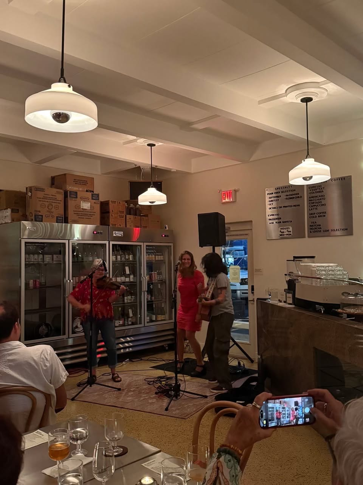
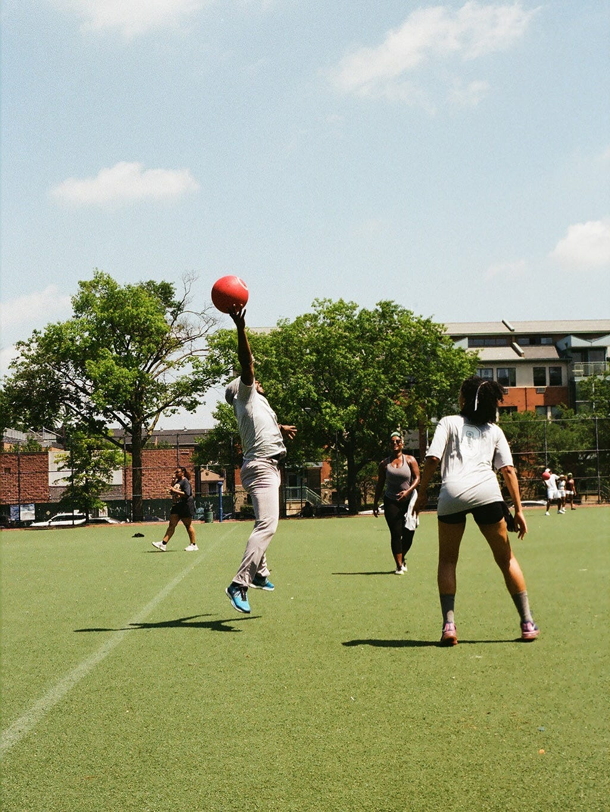

Offline
Interviews with local grassroots communities to highlight community makers for research studio DCDX.
Oct. 23, 2025
Three years ago, Elle Wilson had an idea for a party in her 700-square-foot apartment in NYC. The party had two criteria for its guest list: 1. The guests all had to be single. 2. Each guest was re...

Nov. 13, 2025
In our newsletters, we’ve often highlighted communities in bigger cities. This week, we talked with Third Place in St. Augustine, Florida, about their community in their small but vibrant city. Thi...

Oct. 16, 2025
At the heart of the pandemic, five friends organized a kickball game in Brooklyn in an effort to find a safe and fun way to connect with others during the times of social distancing and uncertainty...

Oct. 8, 2025
FAR-NEAR is a print series-turned community showing yet another signal of a cultural shift offline. Founded in 2017 by Lulu Yao Gioiello, FAR–NEAR began as a print series dedicated to broadening pe...